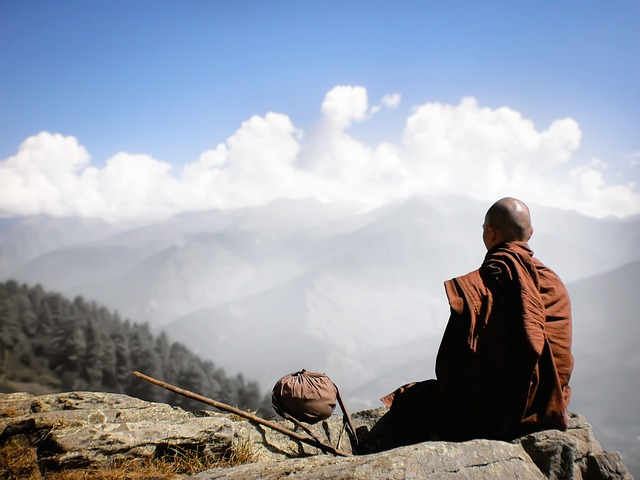
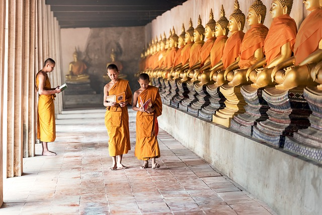
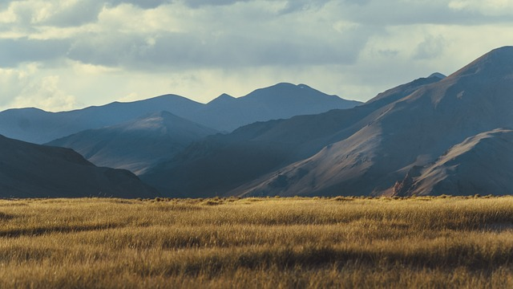
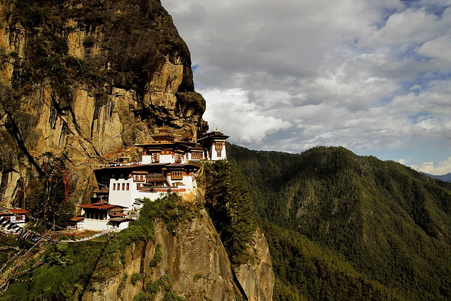

Buthan, małe królestwo ukryte w Himalajach, jest jednym z najbardziej fascynujących i nietypowych miejsc na Ziemi. Znane ze swojego unikalnego podejścia do rozwoju, Buthan promuje filozofię „szczęścia narodowego brutto” zamiast tradycyjnego PKB. Kraj ten łączy w sobie bogatą kulturę, zachowane tradycje oraz wspaniałe krajobrazy górskie, które przyciągają podróżników z całego świata. Każdy zakątek Buthanu tętni życiem, pełnym mistycyzmu i historii, a tradycje buddyjskie są obecne w codziennym życiu jego mieszkańców.
Buthan - Królestwo Szczęścia i Tradycji

Tradycje i Kultura Buthanu
Buthan to kraj, w którym tradycja odgrywa kluczową rolę w życiu codziennym. Każdy aspekt życia mieszkańców związany jest z religią buddyjską oraz praktykami związanymi z duchowością. Podczas wycieczki odwiedzimy zabytkowe klasztory, takie jak Tygriya, zwany „Lękiem Tygra”, który wznosi się na klifie, oraz poznajemy mieszkańców, którzy żyją zgodnie z rytmem tradycyjnych obrzędów. Buthan jest miejscem, gdzie czas zdaje się płynąć wolniej, a natura, kultura i duchowość tworzą nierozerwalną całość.

Spotkania z Dziką Przyrodą Buthanu
Tygrys himalajski - Tygrys himalajski to jeden z najbardziej tajemniczych drapieżników w Azji, zamieszkujący trudno dostępne rejony Buthanu. To majestatyczne zwierzę, choć rzadko spotykane, jest symbolem siły i piękna buthańskiej przyrody.
Yeti - W Buthanie nie brakuje legend o Yeti, mitycznym stworzeniu, które według miejscowych tradycji wędruje po wysokogórskich szlakach. Choć brak naukowych dowodów na istnienie tego stwora, to opowieści o nim są wciąż żywe w kulturze Buthanu.
Jelenie - W Buthanie obecne są liczne gatunki jeleni, które można spotkać w wysokogórskich lasach, w pobliżu miejsc zalesionych i wzdłuż rzek. Są one nieodłącznym elementem buthańskiego krajobrazu.
Yeti - W Buthanie nie brakuje legend o Yeti, mitycznym stworzeniu, które według miejscowych tradycji wędruje po wysokogórskich szlakach. Choć brak naukowych dowodów na istnienie tego stwora, to opowieści o nim są wciąż żywe w kulturze Buthanu.
Jelenie - W Buthanie obecne są liczne gatunki jeleni, które można spotkać w wysokogórskich lasach, w pobliżu miejsc zalesionych i wzdłuż rzek. Są one nieodłącznym elementem buthańskiego krajobrazu.

Wędrówki po Himalajach
Wędrówki po Himalajach to jedna z najwspanialszych atrakcji w Buthanie. Przemierzając górskie szlaki, będziemy mieli okazję podziwiać nie tylko spektakularne widoki, ale także spotkać lokalnych mieszkańców, którzy wciąż żyją w zgodzie z naturą. Wycieczki górskie prowadzą przez wioski, które zachowały swoje tradycje, a także w pobliżu świętych miejsc, gdzie duchowość łączy się z przyrodą. Wyprawy po Himalajach to także okazja do podziwiania unikalnych roślin i zwierząt.

Relaks w Dolinie Paro
Po pełnych wrażeń dniach spędzonych na wędrówkach po Himalajach, odpoczniemy w malowniczej dolinie Paro. To miejsce znane z majestatycznych górskich krajobrazów, buddyjskich klasztorów oraz ciszy, która panuje w tym rejonie. Dolina Paro to także miejsce, gdzie znajduje się słynny klaster Tiger's Nest (Taktsang Monastery), który przyciąga pielgrzymów i turystów z całego świata.

Plan wycieczki
- Dzień 0/1: Wylot z Warszawy do Katmandu w Nepalu, następnie do Paro, stolicy Buthanu. Transfer do hotelu i odpoczynek po podróży.
- Dzień 2: Zwiedzanie Paro, wizyta w Klasztorze Taktsang i relaks w dolinie.
- Dzień 3: Wędrówki po Himalajach, wizyta w tradycyjnych wioskach buthańskich. Trudność trasy ustalona po zaznajomieniu się z grupą.
- Dzień 4: Wizyta w Thimphu, zwiedzanie lokalnych świątyń i poznanie kultury Buthanu.
- Dzień 5-6: Wędrówka przez Dolinę Punakha, odkrywanie historycznych miejsc i świątyń buddyjskich.
- Dzień 7: Wizyta w Paro, wieczorne zwiedzanie miasta i spacer wzdłuż rzeki.
- Dzień 8: Powrót do Paro, pożegnalna kolacja i przygotowanie do wylotu.
- Dzień 9/10: Wylot do Warszawy również z przystankiem w Katmandu.
Dlaczego warto wybrać tę podróż?
- Odkrywanie jednej z ostatnich buddyjskich enklaw na Ziemi.
- Wędrówki po Himalajach i zwiedzanie dzikich dolin pełnych historii.
- Przeżycie w duchu buddyzmu, które wpływa na wewnętrzny spokój i równowagę.
- Spotkania z lokalną społecznością i poczucie szacunku dla natury.